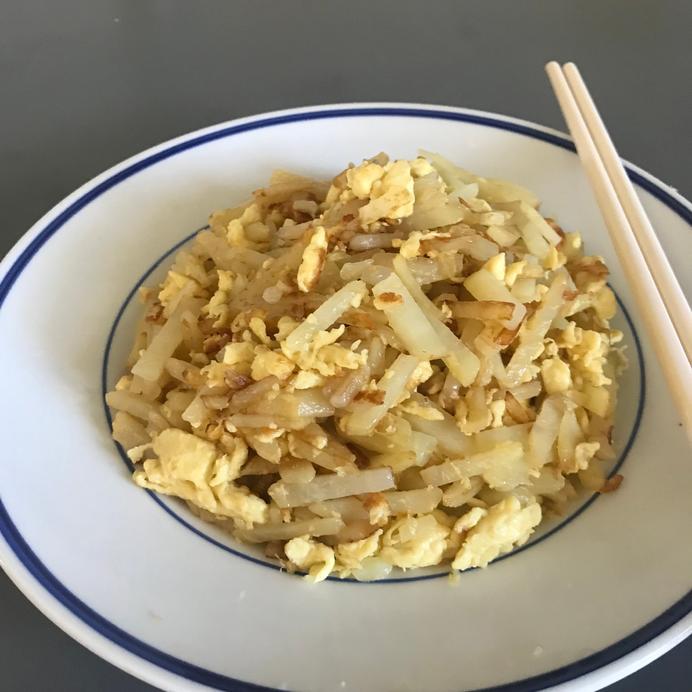
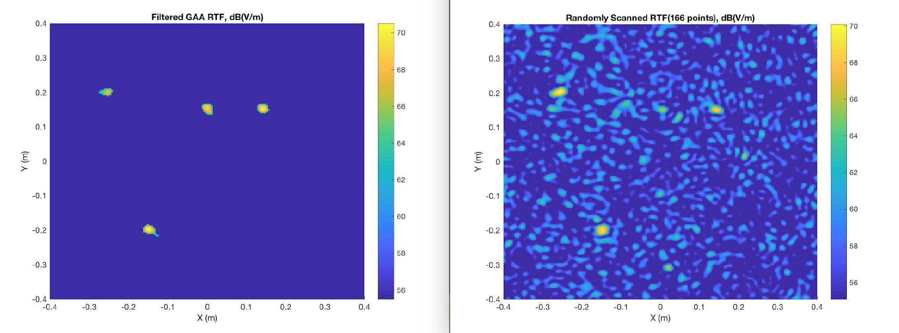
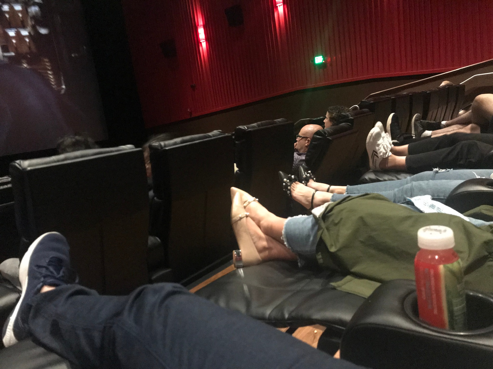
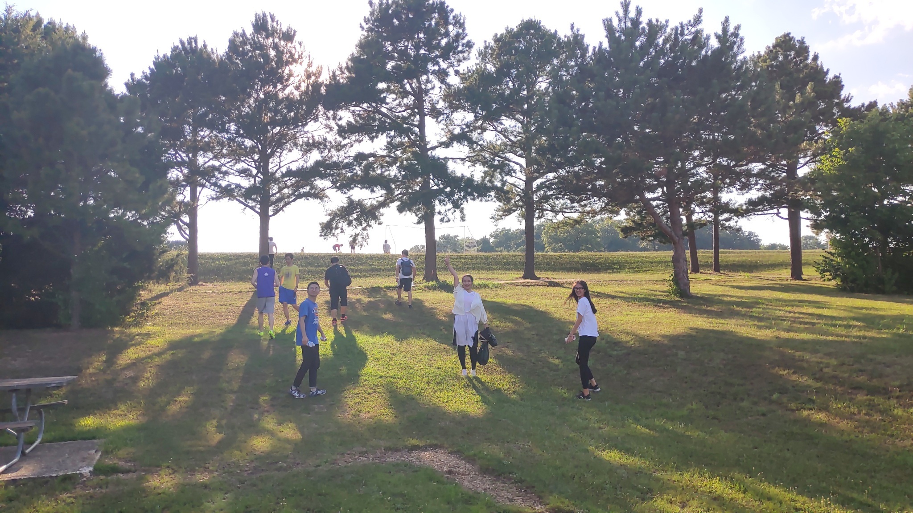
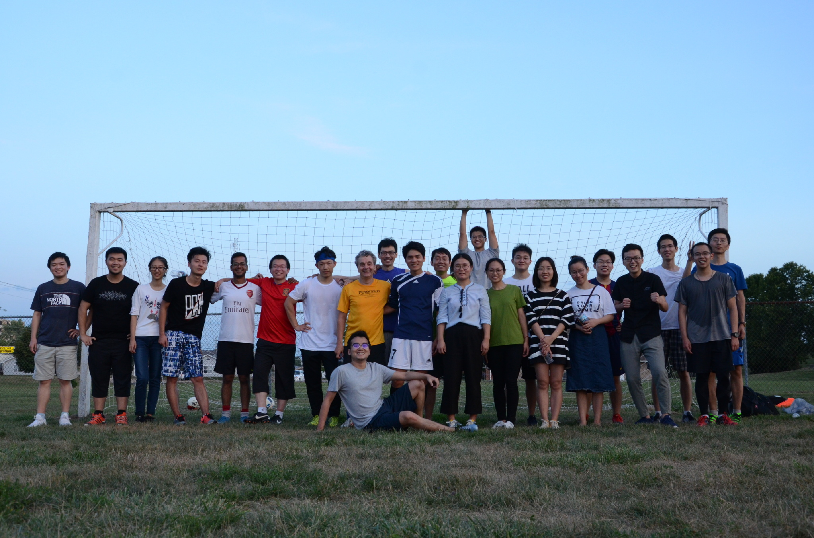

密苏里科技大学EMC Lab暑研 第二周
本周是2018年华中科技大学同学来密苏里科技大学进行暑研的第二周。如果用一个词来概括本周的感觉，那“渐臻佳境”将会是一个不错的选择。第一周生活划下的略显杂乱的轨迹线在此延长、伸展、放射，形成了一道优美而有序的线条。
首先是生活方面，由于初来乍到的我们没有合适的厨具、没有料理的原料，而且更扎心的是一起生活的四个小伙伴都不会做饭，所以我们几乎吃遍了罗拉城中心地带的各种中餐厅日料店，更是消耗掉了几大包泡面。而在即将毕业学长的帮助下，我们凑 齐了厨具，去沃尔玛购买到了原料，并且下载了“下厨房”App开始了零基础的料理学习。每天一到饭点，大家就会齐心协力烹制一道道虽然简单但是却也可口的饭菜。能够自己做饭无疑大幅降低了我们在吃饭方面的开销，同时也为之后的留学生活打下了必要的基础。

之后便是学习研究方面。在研究方面，由于之前在Dian团队打下了坚实的编程与算法的基础、培养了必要的快速学习能力，整体来说我进入状态还是相对较快的。我做的第一个项目是用matlab通过智能算法优化限定条件下ESM放射源扫描中的采样点选取问题。通过将近一周的不断优化，同时也得益于学长和各位导师们耐心的指导和激烈的讨论，在我们所特定的条件下，目前已经取得了相当不错的结果。

这个项目稍微告一段落后，紧接着张岭学长结合范教授得到知道，给我安排了另外一个更具有挑战性的任务，这个任务将主要通过深度学习方法完成，如果效果达到预期，其将作为一个大型仿真项目的一部分被整合。
本周的活动依旧丰富。我们和实验室的导师以及学长们一同踢了足球，参加了野外烧烤、去电影院观看了刚刚上映的碟中谍。由于这里的电影院支持躺着观影，所以观影体验确实是相当不错的。不过看了这种没有字幕的电影，不由感到应该赶紧提高自己这依旧令人捉急的英语听力了。虽然平时和教授们讨论以及购物等场景还是能够应付的，不过到了更加复杂的生活场景中时还是会感到差的很远。长路漫漫，且行且思！

“躺着的”电影院

夕阳下的合影

足球场风采
下周我们将和实验室的导师学长们一同去加州参加一个领域内的研讨会，十分期待！
2018.7.28